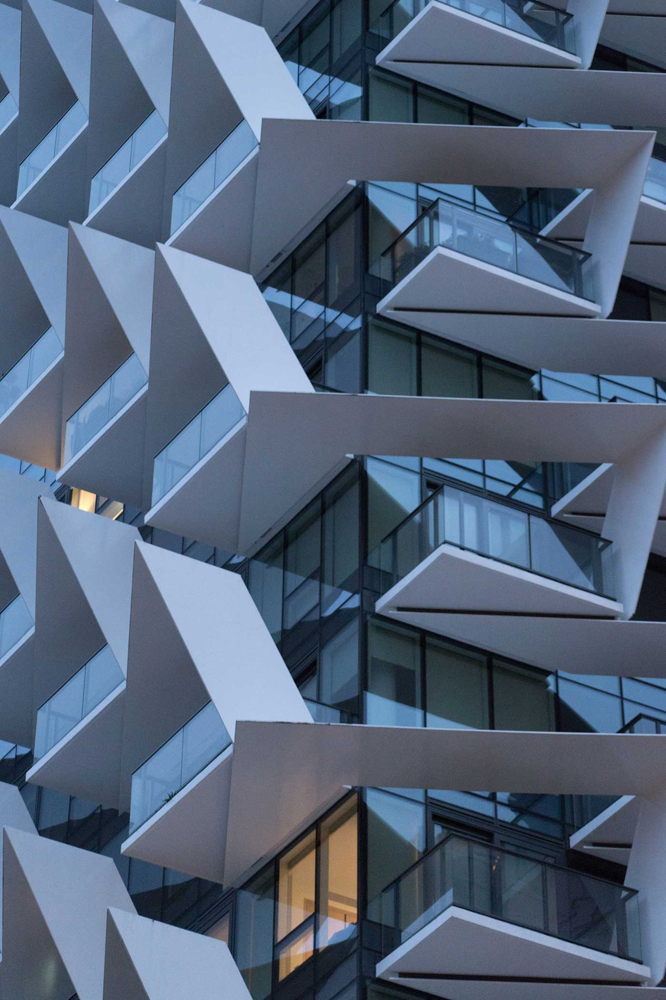
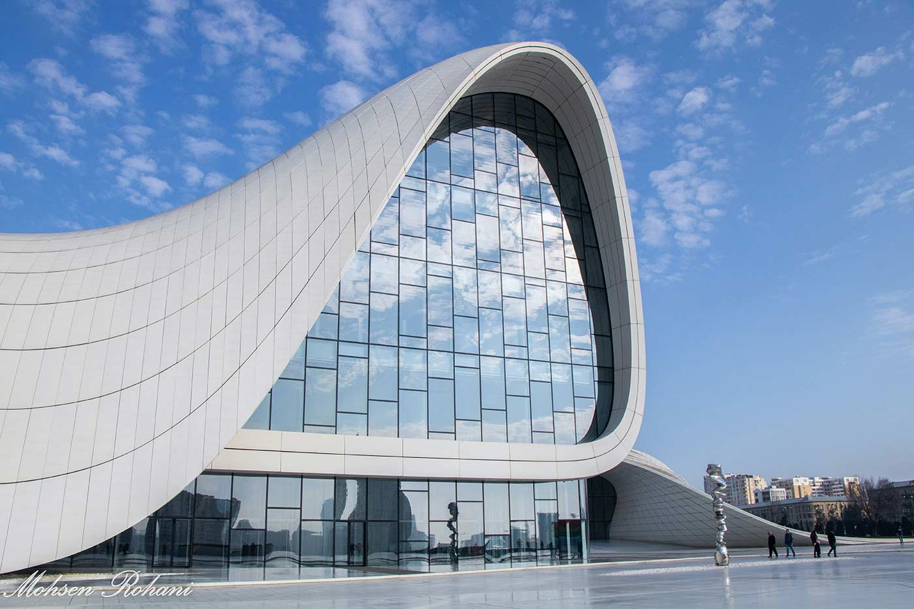
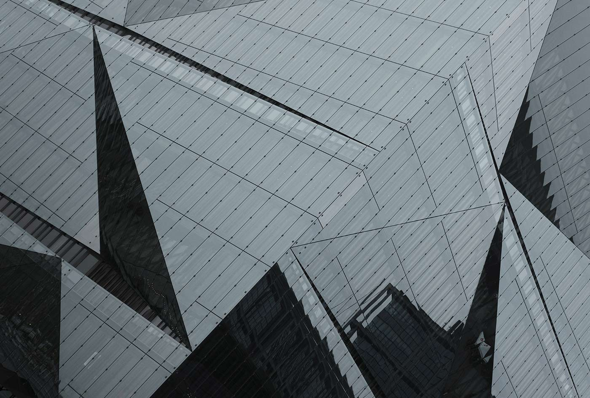
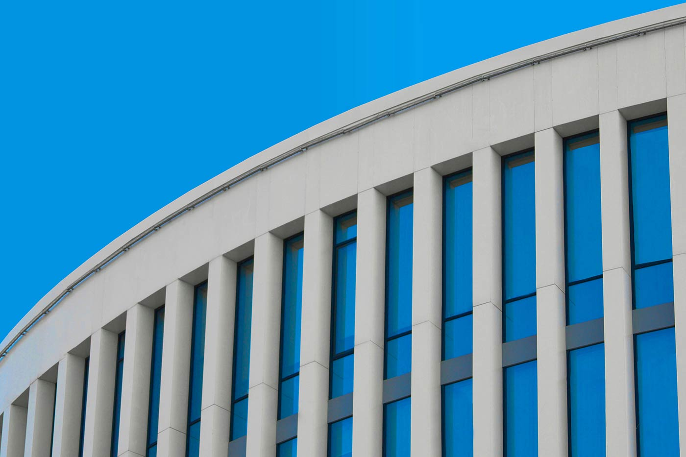
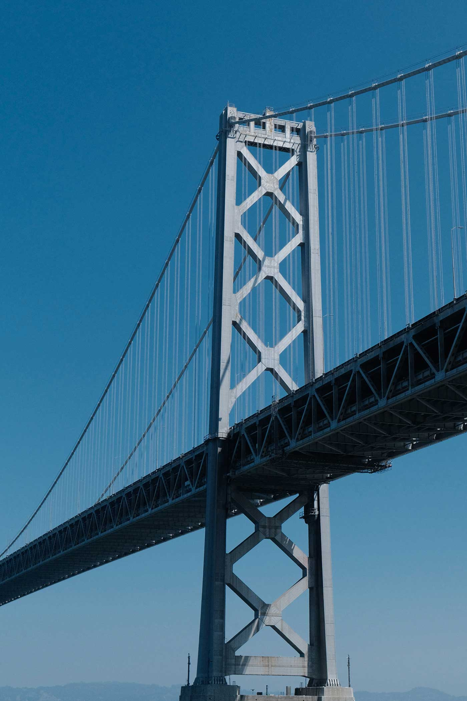

Arc Architectural
Announcements
Journal
Reviews
Books
Information
Events
Anhalt university of applied sciences
Dessau Summer School of Architecture

Sabu Kohso
Nucleur Recursivity and Seismic Awakening

ArkDes
Joar Nango: Girjegumpi
Bauhaus Dessau Foundation
Bauhaus Lab 2023:
Concrete Antarctic
(ad placeholder)
4:3
(ad placeholder)
4:3
(ad placeholder)
4:3
(ad placeholder)
4:3

Radiowaves Collective
Mothering a Movement: Notes from India's Longest Anti-Nuclear Struggles

Livia Krohn Miller
Ten Thousand Years of Isolation

AA editorial
The Avant-Garde Museum
Subscribe
for architecture, art and more